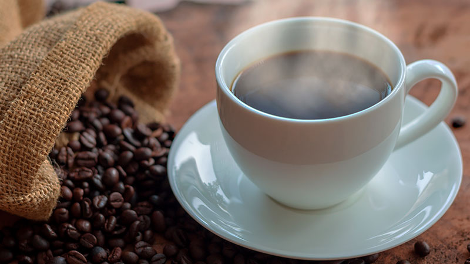
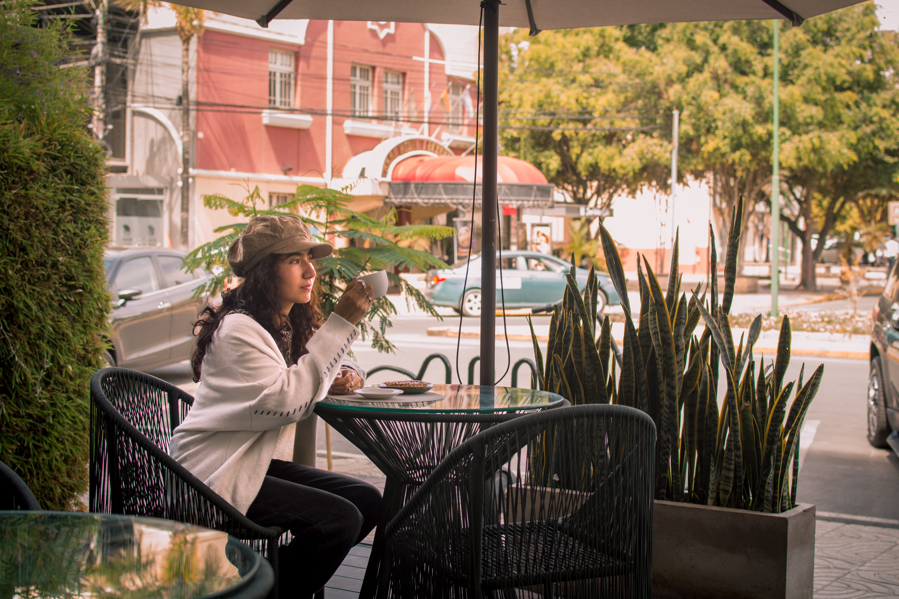

Nuestra historia
Café Andino nace del interés por rescatar la cultura del café de especialidad y acercarla a la comunidad mediante una propuesta accesible, responsable y centrada en la calidad. Trabajamos con proveedores locales y productores comprometidos con prácticas sostenibles, lo que nos permite garantizar un café fresco, trazable y con identidad propia.
Nuestro equipo está formado por baristas apasionados que entienden el café como una experiencia sensorial y cultural. Cada bebida es preparada con atención al detalle, buscando equilibrar sabor, textura y presentación. Creemos que el café no solo es una bebida, sino una oportunidad para generar momentos de conexión y bienestar.
El espacio de Café Andino ha sido pensado como un refugio urbano: un lugar donde la madera, la luz natural y la música suave crean un ambiente ideal para reuniones, estudio o trabajo remoto. Valoramos la cercanía con nuestros clientes y buscamos que cada visita sea una experiencia memorable.

